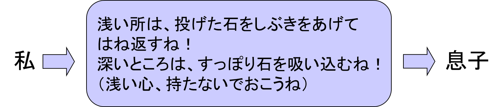
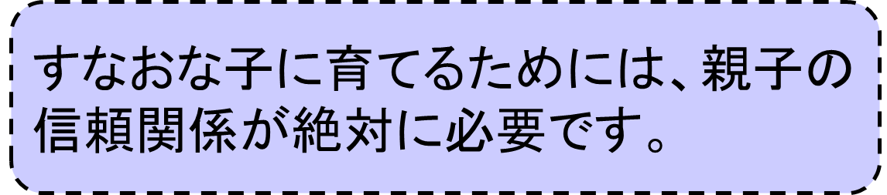
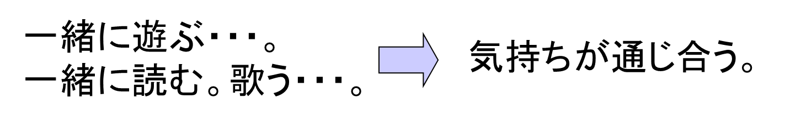
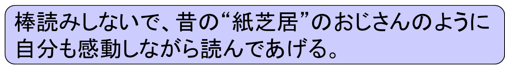
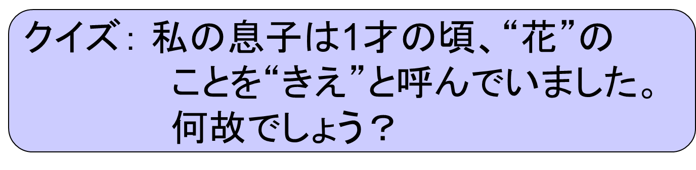
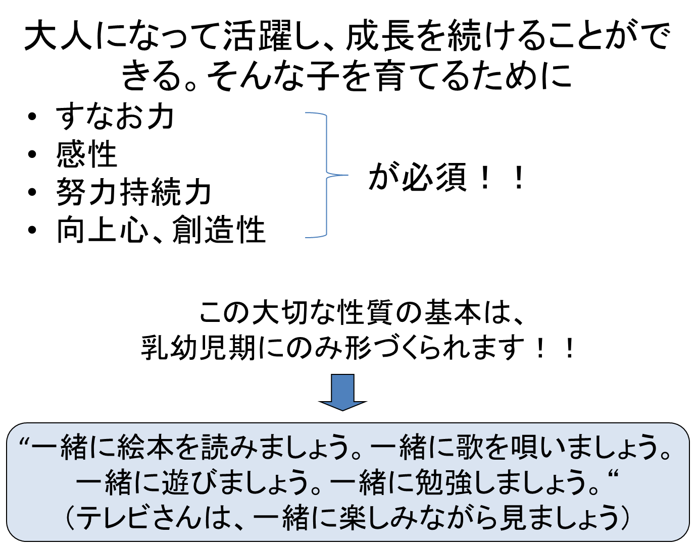
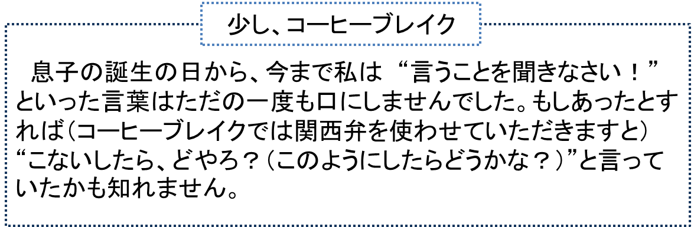

すなおな子＝大人しい子ではありません！
人の言葉に耳を傾ける余裕のある深い心をもった子供のことです。

こんな会話を交わします。


（相手のレベルに余裕をもって
合わせることが基本です）

“今の仕事をやめたら、紙芝居のおじさんに十分になれるぞ！”
こんなことを思い浮かべて読んであげると自分も楽しくなりますよ！

息子が１才未満の頃、私は息子をだっこして散歩をよくしていました。
花を見つけると、私は思わず
“わあっ きれい！！きれいねえ・・・”
とほほ笑みながら叫んでいました。
（一人ではこんな声を出しません。１才未満の息子でも同意してくれるからできることです）
“きれい！＝花”
と、息子は理解していたのでした。

